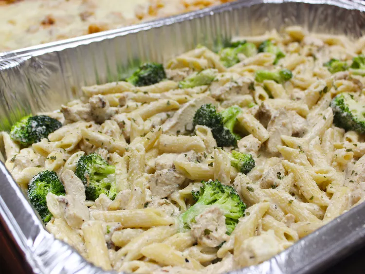

Baked Chicken Alfredo

Description
A quick and easy recipe that any novice cook can make
Made to emulate the meals from various chain restaurants
Ingredients
- 16 oz penne pasta
- 1/2 cup butter
- 2 tsp minced garlic
- 8oz cream cheese, softened
- 2 cups milk
- 6 oz grated parmesan
- 2 tsp dried parsley
- 1 tsp Italian seasoning
- 1 tsp salt
- 1/2 tsp ground black pepper
- 1 tsp olive oil
- 2 chicken breasts, patted dry
- 1/2 tsp garlic powder
Steps
- Bring a large pot of lightly salted water to a boil; add penne and cook, stirring occasionally, until tender yet firm to the bite, about 11 minutes. Drain.
- Bring a large pot of lightly salted water to a boil; add penne and cook, stirring occasionally, until tender yet firm to the bite, about 11 minutes. Drain.
- Heat olive oil in a large skillet over low heat. Season chicken with 1/2 teaspoon salt and garlic powder on both sides. Cook chicken breasts until no longer pink in the center and an instant-read thermometer inserted into the center reads at least 165 degrees F (74 degrees C), about 6 minutes per side. Cut chicken into 1/2-inch cubes.
- Preheat oven to 375 degrees F (190 degrees C).
- Butter bottom and sides of a 9x13-inch casserole dish. Cover bottom with a layer of pasta. Place half of the chicken cubes on top. Pour 1/2 of the sauce over the chicken. Repeat layering pasta, chicken, and sauce. Sprinkle top with remaining Parmesan cheese. Cover with aluminum foil.
- Bake in the preheated oven until sauce is bubbly, about 15 minutes. Remove aluminum foil and bake until cheese is golden, about 5 minutes more.